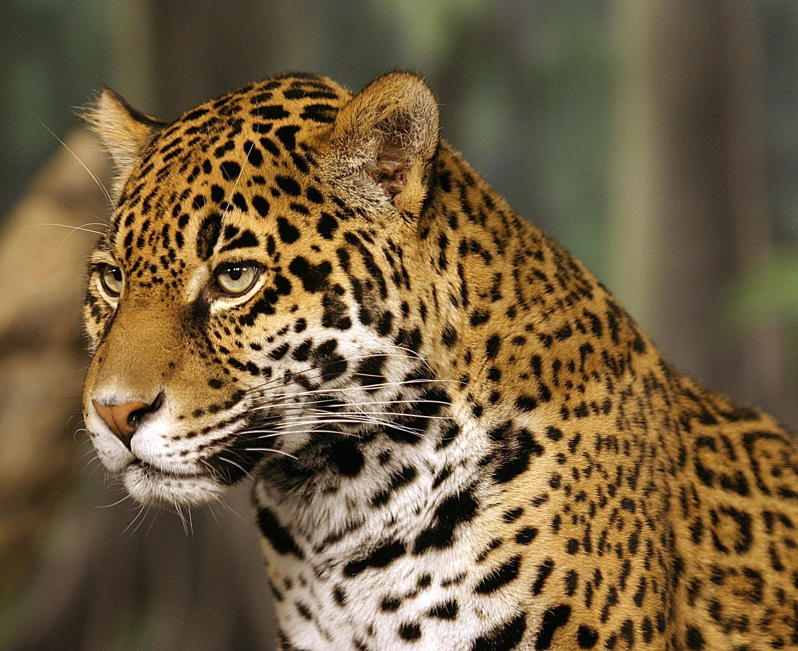
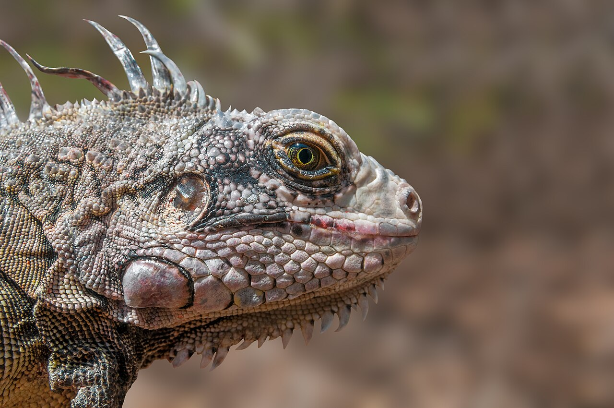
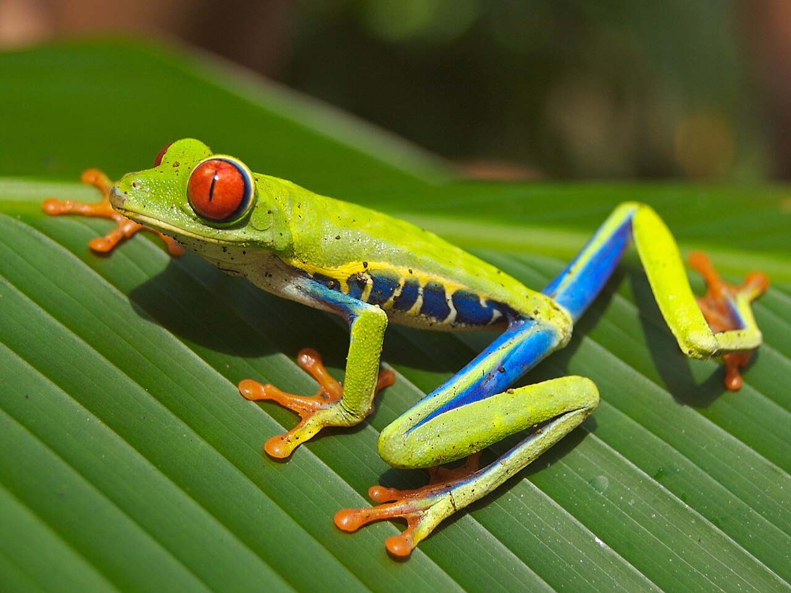
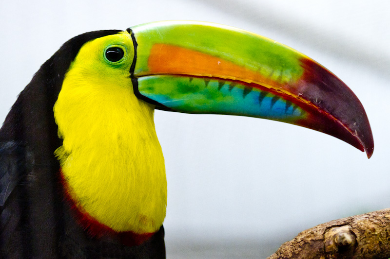
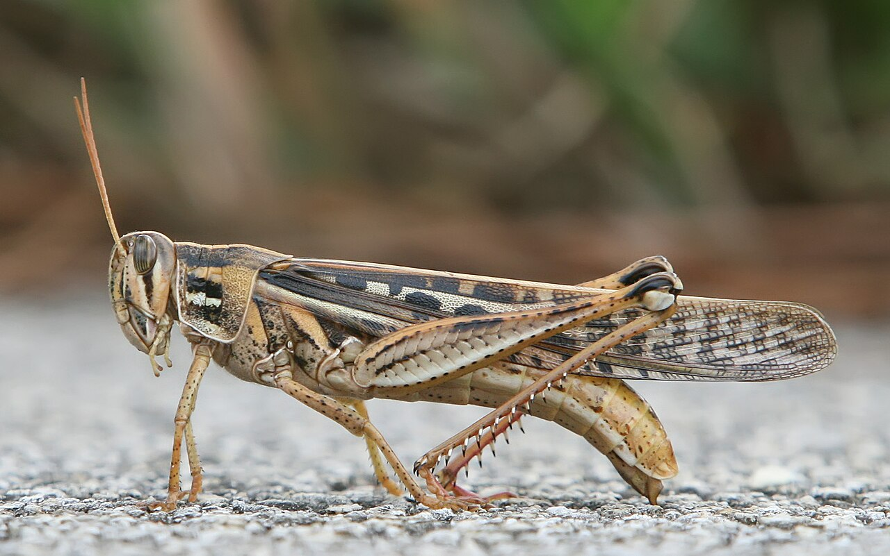

美洲豹（Panthera onca）

攝影／原頁作者：Cburnett at English Wikipedia
使用原頁提供的照片縮圖，沒有額外修圖；原檔修飾紀錄及授權詳情見原頁。本網站其他動物插圖屬教學示意。照片用於觀察身體特徵。物種名稱沿用來源檔案的識別；蚱蜢和樹蛙照片作相應教學類群的實物例子，不能代表該類群所有成員。

攝影／原頁作者：Cburnett at English Wikipedia
使用原頁提供的照片縮圖，沒有額外修圖；原檔修飾紀錄及授權詳情見原頁。本網站其他動物插圖屬教學示意。
攝影／原頁作者：Wilfredor
使用原頁提供的照片縮圖，沒有額外修圖；原檔修飾紀錄及授權詳情見原頁。本網站其他動物插圖屬教學示意。
攝影／原頁作者：Careyjamesbalboa (Carey James Balboa)
使用原頁提供的照片縮圖，沒有額外修圖；原檔修飾紀錄及授權詳情見原頁。本網站其他動物插圖屬教學示意。
攝影／原頁作者：Bridget Samuels from College Park, MD
使用原頁提供的照片縮圖，沒有額外修圖；原檔修飾紀錄及授權詳情見原頁。本網站其他動物插圖屬教學示意。
攝影／原頁作者： http://www.birdphotos.com
使用原頁提供的照片縮圖，沒有額外修圖；原檔修飾紀錄及授權詳情見原頁。本網站其他動物插圖屬教學示意。